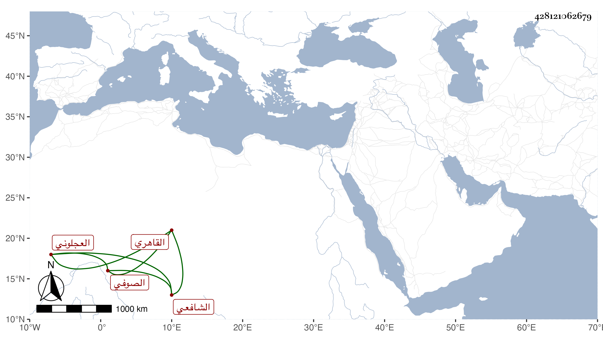

0902Sakhawi.DawLamic.ITO20230111-ara1.EIS1600.428121062679
Biography ID: 428121062679
439
محمد بن علي بن جعفر الشمس العجلوني ثم القاهري الشافعي الصوفي ويعرف بالبلالي بكسر الموحدة ثم لام خفيفة . ولد قبل الخمسين وسبعمائة واشتغل بتلك البلاد قليلا ولازم أبا بكر الموصلي فانتفع به وبغيره وتميز في التصوف ولازم النظر في الأحياء بحيث كاد يأتي عليه حفظا وصارت له به ملكة قوية بحيث اختصره اختصارا حسنا جدا وكان بالنسبة لأصله كالحاوي مع الرافعي وانتفع به الناس وأقبلوا على تحصيله سيما المغاربة وقريء عليه غير مرة وربما استكثر عليه وكذا صنف السول في شيء من أحاديث الرسول واختصر الروضة ولكن لم يكملا واختصر الشفا وعمل مختصرا بديعا في الفروع وقرض السيرة النبوية لابن ناهض . وعرف بالخير والصلاح قديما واشتهر بالتعظيم في الآفاق وحسنت عقيدة الناس فيه ، واستقدمه سودون الشيخوني نائب السلطنة في خدود التسعين وولاه مشيخة سعيد السعداء فدام بها نحو ثلاثين سنة لم يزل عنها إلا مرة بخادمها خضر لقيام تمراز نائب الغيبة في الأيام الناصرية فرج ولم يمض سوى عشرة أيام ثم جيء بالقبض عليه وعد ذلك من كرامات البلالي ثم أعيد . وكان كثير التواضع إلى الغاية منطرح النفس جدا مشهورا بذلك كثير البذل لما في يده شديد الحياء كثير العبادة والتلاوة والذكر سليم الباطن جدا بحيث كان كثير من الناس يتكلم فيه بسبب ما له من المباشرات بالخانقات وتؤثر عنه كرامات وخوارق . ذكره شيخنا في معجمه بما هذا حاصله قال وكان يودني كثيرا وأجاز في استدعاء ابني محمد وذكر أنه ضاع منه مسموعاته . وكذا ذكره في الأنباء باختصار وأنه استقر في مشيخة سعيد السعداء مدة متطاولة مع التواضع الكامل والخلق الحسن وإكرام الوارد . واختصر الأحياء فأجاد وطار اسمه في الآفاق ورحل إليه بسببه ثم صنف تصانيف أخرى وكانت له مقامات وأوراد وله محبون معتقدون ومبغضون منتقدون . ونحوه قول المقريزي كان معتقدا وله شهرة طارت في الآفاق وللناس فيه اعتقاد وعليه انتقاد . مات في يوم الأربعاء رابع عشر شوال سنة عشرين ودفن بمقابر الصوفية بعد شهود شيخنا الصلاة عليه وقد جاز السبعين . وهو في عقود المقريزي وقال كان كثير الذكر متواضعا إلى الغاية بحيث لما اجتمعت به قبل يدي مرارا وقدم إلى نعلي لما انصرفت عنه وهذه سيرته مع كل أحد وحضرت عنده وظيفة الذكر بعد العشاء بالخانقاه وكان يرى رفع الصوت به ويعلل ذلك ، كثير الحياء يديم التلاوة مع سلامة الباطن وله محبون يؤثرون عنه كرامات وخوارق رحمه الله .
